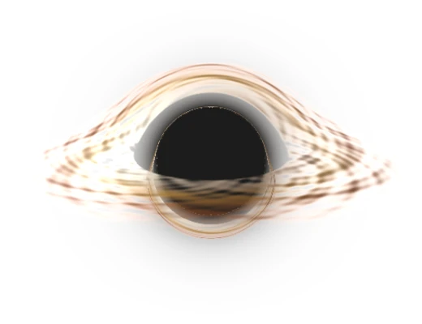

I think about how people and models reason through problems. Precision and rhythm draw me to most of what I work on.
"The best way to find out if you can trust somebody is to trust them." — Ernest Hemingway